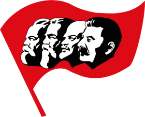

Хронология
- 1911
- 1914
- 1917
- 1918
- 1922
- 1933
- 1939
- 1940
- 1941
- 1945
- 1953
- 1986
- 1991
Русско-японская война 1904-1905 годов
Русско-Японская война 1904-1905 годов, кратко о которой мы поговорим сегодня, одна из важнейших страниц истории Российском Империи. В войне Россия потерпела поражение, продемонстрировав отставание в военном плане от ведущих мировых стран. Другое важно событие войны - по ее итогам была окончательно сформирована Антанта, и мир начал медленно, но неуклонно, катиться к первой мировой войне.
В 1894-1895 года Япония разгромила Китай, в результате чего Японии должны были перейти Ляодунский (Квантунский) полуостров вместе с Порт-Артуром и остров Фармоза (нынешнее название Тайвань). В ход переговоров вмешались Германия, Франция и Россия, которые настояли на том, чтобы Ляодунский полуостров остался в пользовании Китая.
В 1896 году правительство Николая 2 подписывает договор с Китаем о дружбе. В результате Китай позволяет России строить железную дорогу к Владивостоку через Северную Манчжурию (Китайская Восточная Железная Дорога).
В 1898 году Россия в рамках соглашения о дружбе с Китаем арендует у последнего Ляодунский полуостров на 25 лет. Этот шаг вызвал резкую критику со стороны Японии, также претендовавшей на эти земли. Но к серьезным последствиям это на тот момент не привело. В 1902 году царская армия входит а Маньчжурию. Формально Япония была готова признать эту территорию за Россией, если бы последняя признала господство Японии в Корее. Но в русском правительстве допустили ошибку. Они не воспринимали Японию в серьез, и даже не думали вступать с ней в переговоры.
Открытие южного полюса
31 марта 1819 года русский мореплаватель, адмирал И. Ф. Крузенштерн направил письмо морскому министру Российской Империи де Траверсе о необходимости исследования полярных вод.[10] В письме Крузенштерн предложил подготовить две экспедиции — к Северному и к Южному полюсу. В каждую экспедицию планировалось включить по два судна. Особое внимание он уделял экспедиции к Южному полюсу, которая проходила в 1819—1821 годах. Её результатом стало открытие Антарктиды, однако представления об очертаниях и геологии южного материка были весьма туманными до конца XIX века.
В 1839—1843 годах Джеймс Кларк Росс на кораблях «Эребус» и «Террор» предпринял масштабное для своего времени исследование Антарктики, открыв море и величайший шельфовый ледник, названные в его честь. В 1841 году Джеймс Росс открыл антарктические вулканы Эребус и Террор, названные в честь его кораблей. В 1842 году первым из людей Росс пересёк отметку 78° южной широты. Однако новых южнополярных экспедиций Британия не предпринимала в течение 60 лет.
Первая Мировая война
Пе́рвая мирова́я война́ (28 июля 1914 года — 11 ноября 1918 года) — одна из самых широкомасштабных войн в истории человечества.

Формальным поводом к войне послужили события в Сараеве, где 28 июня 1914 года боснийский серб Гаврило Принцип убил наследника австро-венгерского престола эрцгерцога Фердинанда и его морганатическую супругу Софию Хотек.
Страны — участницы Первой мировой войны разделились на два противоборствующих лагеря:
- Центральные державы: Германская, Австро-Венгерская, Османская империи и Болгарское царство;
- Антанта: Российская империя, Британская империя, Французская республика.
Всего за годы войны в армии воюющих стран было мобилизовано более 70 миллионов человек, в том числе 60 миллионов в Европе, из которых погибло от 9 до 10 миллионов. Количество жертв среди гражданского населения, по разным оценкам, находится в интервале от 7 до 12 миллионов человек, из которых около 1 миллиона погибло в результате боевых действий[7][8]; около 55 млн человек получили ранения[9].
Первая мировая война послужила прологом и детонатором крупнейших революций, включая Февральскую и Октябрьскую 1917 года в России и Ноябрьскую 1918 года в Германии[10]. В результате войны прекратили своё существование четыре империи: Российская, Австро-Венгерская, Османская и Германская.
Гражданская война
(25 октября (7 ноября) 1917 — 25 октября 1922[2]/16 июля 1923 года[3]) — ряд вооружённых конфликтов между различными политическими, этническими, социальными группами и государственными образованиями на территории Российской республики, последовавших после установления в Петрограде и Москве власти большевиков в октябре 1917 года.
Гражданская война явилась следствием революционного кризиса, развернувшегося в Российской империи в начале XX века, начавшегося с революции 1905—1907 годов, усугубившегося в ходе Первой мировой войны и приведшего к падению монархии, хозяйственной разрухе, глубокому социальному, национальному, политическому и идейному расколу российского общества. Апогеем этого раскола[4] и стала ожесточённая война в масштабах всей страны между вооружёнными силами Советской власти, Белого движения и национальных движений за независимость при участии Центральных держав и Антанты.
Гражданская война закончилась установлением советской власти на большей части территории бывшей Российской империи, признанием Советским правительством независимости Финляндии, Польши, Эстонии, Латвии, Литвы, а также созданием на подконтрольной советской власти территории Российской, Украинской, Белорусской и Закавказской советских республик, 30 декабря 1922 года подписавших договор об образовании СССР. По разным оценкам, погибло от 10 до 17 млн человек; около 2 млн человек в результате войны покинуло страну[5].
Образование Советского союза
Договор об образовании СССР был подписан 29 декабря 1922 года[3], а уже 30 декабря 1922 года I Всесоюзный съезд Советов одобрил его. РСФСР и выделившиеся из неё ранее Украинская ССР (УССР), Белорусская ССР (БССР) и Закавказская Социалистическая Федеративная Советская Республика (ЗСФСР) объединялись в Союз Советских Социалистических Республик (СССР), каждая из республик которого формально считалась суверенным государством.
Образование СССР стало итогом развернувшейся в начале 1920-х годов внутрипартийной борьбы по вопросу о необходимости урегулирования отношений между образовавшимися на территории бывшей Российской империи советскими государственными образованиями, в ходе которой выдвинутый Сталиным план «автономизации» подконтрольных большевикам территорий — прямого включения выделившихся за время гражданской войны формально независимых советских республик обратно в состав РСФСР на правах автономных республик Российской Федерации — был отклонён. Под давлением Ленина был принят «интернационалистский» проект, в соответствии с которым все существовавшие на тот момент основные советские республики получали формальное равноправие друг с другом.
Эпоха Сталинизма
Сталини́зм (по партийному псевдониму главного выразителя его идеологии и практики — Иосифа Сталина) — политическая система, сложившаяся в СССР (а затем и в зависимых от него государствах), в конце 1920-х — начале 1950-х годов, и в превращённом виде (неосталинизм) существовавшая до самого распада СССР; лежавшая в основе суперэтатизма идеология и модель политического устройства государства.
Сталинизм характеризуется тоталитарным режимом, усилением карательных функций государства, сращиванием государственных органов и правящей коммунистической партией сталинистского типа, жёстким идеологическим контролем во всех сферах общественной жизни, пропагандой, продвигающей культ личности Сталина. Ряд исследователей считают сталинизм одной из форм тоталитаризма[1][2]. В СССР сталинизм пропагандировался как логическое продолжение идей большевизма и ленинизма.
Советско-финляндская война
Сове́тско-финля́ндская (советско-финская) война́ 1939—1940 годов (фин. talvisota — Зи́мняя война[8], швед. vinterkriget) — война между СССР и Финляндией в период с 30 ноября 1939 года по 13 марта 1940 года.
26 ноября 1939 года правительство СССР направило ноту протеста правительству Финляндии по поводу артиллерийского обстрела, который, по заявлению советской стороны, был совершён с финляндской территории. Ответственность за начало военных действий советской стороной была полностью возложена на Финляндию. Начало военных действий привело к тому, что 14 декабря 1939 года СССР как агрессор был исключён из Лиги Наций[9].
Война завершилась подписанием Московского мирного договора. В состав СССР перешло 11 % территории Финляндии (со вторым по величине городом Выборгом). 430 тысяч финских жителей финские власти принудительно переселили из прифронтовых районов вглубь страны.
Великая Отечественная война
Вели́кая Оте́чественная война́ (22 июня 1941 — 9 мая[5] 1945) — война Союза Советских Социалистических Республик, начавшаяся с вторжения на советскую территорию войск нацистской Германии и её европейских союзников (Венгрии, Италии, Румынии, Словакии, Финляндии, Хорватии) и закончившаяся освобождением от фашизма стран Центральной и Восточной Европы; важнейшая составная часть Второй мировой войны, завершившаяся победой Красной Армии и безоговорочной капитуляцией вооружённых сил Германии. В западных странах именуется «Восточным фронтом»[6], в Германии — также «Немецко-Советской войной».
Военно-политическое руководство нацистской Германии, рассчитывая на стратегию молниеносной войны («блицкриг»), подготовило план агрессии против Советского Союза, получивший кодовое именование «Директива № 21. План „Барбаросса“». В войне против СССР ставилась цель ликвидировать советское государство, завладеть его богатствами и «германизировать» территорию страны вплоть до Урала[7]. Для народов Советского Союза Великая Отечественная война стала справедливой войной за свободу и независимость своей Родины, гимном которой явилась песня «Священная война»[7][8].
В ходе войны Советский Союз в составе антигитлеровской коалиции нанёс наибольший ущерб вооружённым силам Германии и её европейских союзников, тем самым сыграв решающую роль в их разгроме в Европе[9][10][11]. Нюрнбергский трибунал, состоявшийся в 1945—1946 годах, дал оценку развязанной Германией агрессивной войне, военным преступлениям, преступлениям против человечности и вынес приговор нацистским преступникам.
Период устойчивого развития СССР
В 1953 году умирает Сталин, и новым коммунистическим лидером СССР становится Никита Хрущев. При нём 4 октября 1957 года на орбиту был запущен первый в мире искусственный спутник Земли, а 12 апреля 1961 года в космосе побывал первый человек, и им стал гражданин советского союза Юрий Гагарин.
Но в 1960—х годах, после многих лет роста напряжённости в советско-американских отношениях и увеличения ядерного потенциала с обеих сторон, СССР и США столкнулись с Карибским кризисом. Соединённые Штаты разместили в Турции и Италии ракеты средней дальности, которые могли долетать до территорий СССР. В ответ Советский Союз разместил своё ядерное вооружение на Кубе, что, в свою очередь, угрожало безопасности американцев.
Итогом Карибского кризиса (16—28 октября 1962 г.) стал вывод американских ракет с территорий Турции и Италии, а также вывод ядерного вооружения СССР с территории Кубы. В конечном счёте Карибский кризис стал большей неудачей для Советского Союза, чем для США. Из-за этого и многих других ошибок Хрущев постоянно подвергался критике и был вынужден подписать заявление об отставке в 1964 году.
В 1984 году место Леонида Брежнева занял Юрий Андропов, которого, в свою очередь, сменил Константин Черненко. Он также задержался на посту главы ЦК КПСС не на долго, и в 1985 году к власти пришел Михаил Горбачев. Горбачев ввел экономическую политику под названием «перестройка», которая предполагала ослабление государственного контроля над экономикой. Но реформы Горбачёва не смогли радикально улучшить тяжёлое положение советской экономики.
Августовский путч
А́вгустовский путч, он же Путч 1991 (Августовский кризис 1991 г.[3]) — события 19—21 августа 1991 года в Советском Союзе, получившие оценку со стороны официальных лиц и органов государственной власти в СССР как заговор, государственный переворот и антиконституционный захват власти (путч)[комм.- 1].
Начавшись как попытка группы высокопоставленных советских консерваторов предотвратить намеченное на 20 августа подписание Союзного договора (в лице делегаций РСФСР, Казахстана и Узбекистана)[11], подводивших черту в истории СССР, переворот привёл к окончательной дискредитации союзных органов власти и Коммунистической партии.Перейти к разделу «#Итоги» Во главе сопротивления заговорщикам встал Президент РСФСР Борис Ельцин и структуры российской республиканской власти, расположенные в «Белом Доме» в Москве.Перейти к разделу «#Противники ГКЧП» Также крупное сопротивление действиям путчистов оказывал Ленинград.Перейти к разделу «#Противостояние ГКЧП в Ленинграде» Администрация США за несколько месяцев до путча располагала информацией о готовящемся перевороте и сообщила об этом Ельцину.Перейти к разделу «#Вовлечённость в события иностранных государств» К прямым и косвенным жертвам событий, погибшим в августе, можно причислить до 10 человек[комм.- 2].Перейти к разделу «#Жертвы»Перейти к разделу «#Самоубийства должностных лиц СССР и ЦК КПСС»
Распад СССР
Распа́д СССР — прекращение существования Союза ССР, произошедшее в связи с процессами системной дезинтеграции, имевшими место в социальной структуре, народном хозяйстве, общественно-политическом и государственном устройстве Советского Союза.
Процесс распада начался во второй половине 1980-х годов в ходе перестройки, когда Генеральный секретарь ЦК КПСС (1985—1991) М. С. Горбачёвым инициировал проведение реформ, направленных на экономическое ускорение, гласность и демократизацию государственной и общественно-политической деятельности.
Одним из главных признаков и проявлений распада СССР явилось стремление союзных республик к большей государственной и экономической независимости от союзного центра («Парад суверенитетов»); в сентябре 1991 года союзный центр и главы союзных республик признали независимость Латвии, Литвы и Эстонии. В течение последних лет существования СССР на его территории начались или получили новый импульс ряд межнациональных конфликтов (Карабахский конфликт, грузино-абхазский конфликт и грузино-южноосетинский конфликт, конфликт в Приднестровье и др.), произошёл экономический кризис.
17 марта 1991 года на территории страны прошёл всесоюзный референдум о сохранении СССР. На вопрос о «необходимости сохранения СССР как обновлённой федерации равноправных суверенных республик» положительно ответили свыше 76 % участников голосования. После референдума стартовал Новоогарёвский процесс, который должен был завершиться подписанием договора о создании Союза Суверенных Государств, объявлявшегося преемником СССР, однако этого не произошло в связи с событиями в Москве 18—21 августа 1991 года.
Распад Союза ССР завершился подписанием Беловежских соглашений и Алма-Атинской декларации 8 и 21 декабря 1991 года соответственно, которые учредили конфедеративный союз большинства бывших советских республик Содружество Независимых Государств[комм. 1]. 25 декабря 1991 года президент СССР Михаил Горбачёв сложил свои полномочия, а на следующий день, 26 декабря 1991 года, Совет Республик Верховного Совета СССР принял декларацию о прекращении существования СССР.